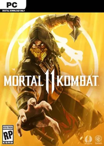

La experiencia definitiva de Mortal Kombat 11 (2019) PC Full Español Latino toma el control de los protectores de la Tierra en las dos campañas temporales más aclamadas para impedir que Kronika haga retroceder el tiempo y reinicie la historia. Descarga ya mismo esta versión crackeada del juego y disfruta con las peleas que ofrece esta nueva entrega de una de las sagas de lucha más aclamadas de la historia.
Ficha Tecnica:
Título: DRAGON BALL: Sparking! ZERO PC-GAME
Fecha de Lanzamiento: 10 de Octubre de 2024
Fecha de Actualización: 29 de Octubre de 2024
Plataforma: PC
Formato: ISO
Tamaño: 24.39 Gigas
Idioma Voces: Ingles y Japones
Idiomas: Español, Inglés, Francés, Alemán, Entre otros.
Género: Acción, Lucha
Las nuevas variantes de los personajes te ofrecen un control de tus combatientes sin precedentes, ya que podrás personalizarlos como tú quieras. El motor gráfico, además de mostrar con gran detalle cada destrucción craneal y ocular, te acercará tanto al combate que casi podrás sentirlo. Y eso no es todo: las cinemáticas del modo Historia te traen a los combatientes clásicos y a nuevos personajes, que continuarán esta épica saga creada hace 25 años.
Características:
Imagenes:
Audio
Mínimos:
Sistema Operativo: Windows 7 y 10 de 64 bits
Procesador: Intel Core i5-750, 2.66 GHz | AMD Phenom II X4 965, 3.4 GHz o AMD Ryzen 3 1200, 3.1 GHz
Memoria: 8 Gigas de RAM
Gráficos: NVIDIA® GeForce GTX 670 o NVIDIA GeForce GTX 1050 | AMD Radeon HD 7950 o AMD Radeon R9 270
DirectX: Versión 11
Recomendados:
Sistema Operativo: Windows 10 de 64 bits
Procesador: Intel Core i5-2300, 2.8 GHz | AMD FX-6300, 3.5 GHz o AMD Ryzen 5 1400, 3.2 GHz
Memoria: 8 Gigas de RAM
Gráficos: NVIDIA GeForce GTX 780 o NVIDIA GeForce GTX 1060 6 Gigas | AMD Radeon R9 290 o RX 570
DirectX: Versión 11